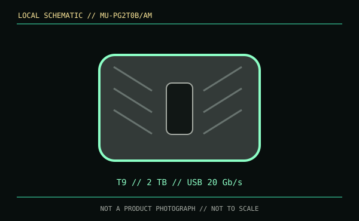

[ REMOVABLE MEDIA // MODEL-SPECIFIC RECORD ]
Samsung Portable SSD T9 2 TB (MU-PG2T0B/AM)
A finished USB portable SSD, not an enclosure or a replaceable bare drive. This entry identifies the 2 TB black T9 configuration MU-PG2T0B/AM.

IDENTIFICATION: T9 and earlier T-series drives are separate products; identify the label SKU and USB generation rather than relying on the family name.
Format, capacity and compatibility
| Product / part ID | Samsung Portable SSD T9, 2 TB, MU-PG2T0B/AM (black regional SKU) |
|---|---|
| Interface | USB 3.2 Gen 2x2, up to 20 Gb/s, over USB Type-C. USB-C denotes the connector, not guaranteed support for the 2x2 data mode. |
| Performance | Manufacturer maximum sequential read/write speeds are each up to 2,000 MB/s. Achieving this rate requires an appropriate USB 3.2 Gen 2x2 host, cable and workload; other USB hosts negotiate a slower supported mode. |
| NAND / endurance | The cited consumer specification does not publish the NAND type or a TBW endurance rating for this SKU. |
| Compatibility | USB data host required. Samsung lists Windows, macOS and Android support; system-version, filesystem and device power limits remain host-specific. Reformat only after making a verified backup. |
| Thermal / enclosure caveat | Dynamic thermal management may reduce throughput during sustained transfers. The stated peak is not a guaranteed continuous write rate or an endurance metric. |
Handling and preservation
Use a data-rated cable, safely eject, and avoid heat and impact. Preserve the original label and package details; keep multiple verified copies on independent media. Hardware encryption and a portable enclosure do not replace a recovery plan, and an unpowered SSD should not be treated as permanent storage.
Sources and standards
- Samsung — T9 2 TB product specificationsManufacturer details for the MU-PG2T0B/AM model.
- Samsung Semiconductor — consumer-storage product documentsManufacturer documentation and support library for Portable SSD products.
- USB-IF — USB 3.2 specifications overviewReference for USB 3.2 generation and link modes.